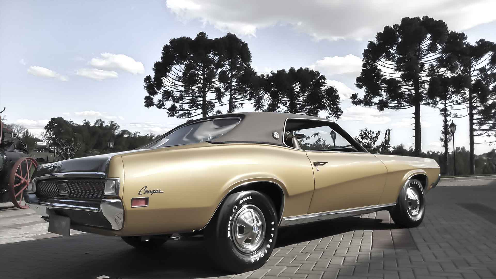

Nossa História:
A [G]old's é uma empresa que possui um seleto acervo de veículos que preservam a originalidade e estado de conservação diferenciado.
Os veículos do acervo adotam padrões superiores de manutenção, restauração e conservação que são reconhecidos e comercializados para os mais diversos pontos do Brasil e do mundo. Somos uma empresa movida pela paixão pelos carros clássicos e pelas histórias que eles carregam. Nosso objetivo é ajudar nossos clientes e colecionadores a encontrarem o clássico dos seu sonhos. Quem é apaixonado por antigos não pode deixar de negociar e conhecer os veículos da [G]old's.